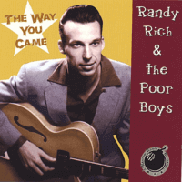

Randy Rich and the Poor Boys - The Way You Came (Album, 2004)
01 - Yellow Flash Rock (2:13)
02 - Tell Me Why I Never Win (2:10)
03 - She's Wild (1:54)
04 - I Can't Go On This Way (2:10)
05 - Big Ben Boogie (2:34)
06 - A Girl Like You (1:47)
07 - Real Special To Me (2:36)
08 - The Way You Came (2:36)
09 - I'm The One To Blame (2:45)
10 - Long Black Hair (1:46)
11 - You'll Never Know (1:49)
12 - Why Do You Break My Foolish Heart (2:40)
13 - Sweden Stomp (1:49)
14 - I'm A Hepcat (1:21)
© Rhythm Bomb Records :: [RBR 5604]
Notes
Germany.
Randy Richter - Lead vocals, Lead guitar
Michael 'Wassilly' Kielast - Double bass, Lead vocals (on tracks 02, 12, 13, 14)
reference information: Discogs®
Review
029/366 (Project 366)
Ambitious musicians should be reviewed extremely carefully! I need hours to listen to it...